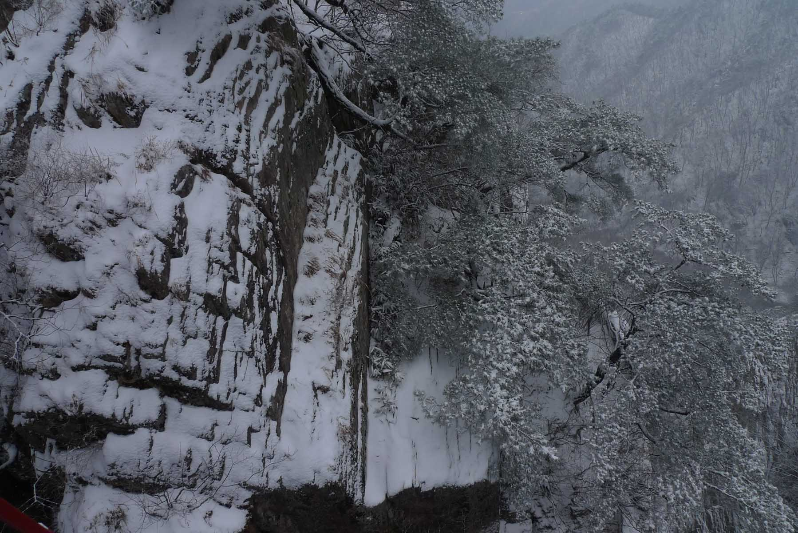

My Favorite Hike
This happens to be one of my favorite hikes in all of Korea because the trail follows up one of the most beautiful valleys
in Korea. The stream is always flowing and there are many water falls along the way. Each, individually named, has its own
charm. Some are suitable for wading and all present a cool image in the heat of the summer. This side of the mountain is not
hiked near as much as the other side so during spring, summer and fall this is the trail to go, all the way to the peak of
the mountain, to avoid crowds. In the end you achieve the same great views of the distant mountains and valleys as if you
had hiked the opposite side. The only negative is the distance from Daejeon. Driving there from KAIST takes about one hour
so with our standard meeting time of 10 a.m. at Kaist, starting time from the parking lot would be 11 a.m.
Take a look at the map first
The trail starts at the parking area for DaeDunsan Provincial park (대둔산 도립공원) and there are maps there worth looking at as
they show that this is a long trail but because of this, the trail is not steep until you reach the half way mark. The trail
also has turn offs with board walks that are worth taking as each one is there to share a special view of a spectacular
water fall or a particularly fascinating rock formation with the stream rushing down around the rocks. About half way up the
mountain there is a site of a Buddhist temple, now abandoned. It is characterized by rock walls and rocks positioned in
locations of where temples posts and corners used to be located. Take your time here as these relics are very well
preserved, especially the walls.
Summit Structure
On this day we arrived at the location of a stone Buddha on an occupied temple site called 석천암 at exactly 2:19 pm. There is
a stair way leading up to the temple buildings and this is worth viewing as the location is really special. Buddhist temples
in Korea are renowned for their remote and scenic locations in order to be closer to heaven and this one is no exception. In
anticipation of hungry and thirsty hikers here one can purchase ramyeon (라면 – a popular type of instant noodles) and drinks.
From this location you can see further ahead to the Art Deco structure that defines the summit. I have never seen another
summit structure like this on any other mountain! The structure is called 개척탑 and was erected in 1970 (although modified for
maintenance purposes in 1989) to commemorate the climbing of the trail.
Excellent Views
From here there are a number of recently built board steps leading to the summit area. When the steps stop, you are near the
peak. From here it is a scramble up to the summit platform that is usually crowded with hikers taking selfies or gathering
together to have a group photo taken. The views from here on a clear day are excellent, one can see for many kilometers so
it is easy to understand the popularity of this mountain as you have already forgotten the hardship of the climb. The way
down is the reverse of the above, with maybe a dip at a waterfall, then expect to arrive at the parking lot late in the day.
There are two major peaks along this trail the 낙조대 and 마천대, the latter being 878 meters and place of the 개척탑 structure.
Interesting Rock Formations
As said at the beginning of this trail description, this is one of my favorite hikes in Korea. The trail is rather leisurely
for two thirds of the way up and the stream valley is exceptionally beautiful. I especially enjoy the cool sound of the
stream that is always in the background as you hike the trail reminding one of the magical powers of flowing water over
time. The unusual rock formations will certainly peak the interest in anyone with a curiosity in Geology. In the summer the
waterfalls serve as an oasis for a refreshing dip before continuing on in the sweltering heat. We have also hiked this trail
in the winter and it is especially lovely when there is glittering soft snow on the ground.
DaeDunSan 대둔산 (South side) Trail hike
The South side of the mountain
This is a very popular mountain to hike in Korea to which the crowds you will encounter will attest to. The south side of
the mountain is the most popular way to approach the mountain summit which is called 마천대 in Korean. As this summit is also
discussed in the 도둔산 DaeDunSan North side trail hike you can refer to that description for more information and pictures.
Part of the attraction with the south side is a cable car part way up the mountain, a suspension bridge and long ladders
too. A cable car means this mountain becomes more accessible for families with children or others who might have difficulty
climbing the entire mountain. Since it is the side of the mountain with many hikers and I tend to avoid this side for that
reason except in the winter when there are fewer hikers on the trail. This hike up the other side is a totally different
experience as the trail transverses a beautiful valley and eventually leading to many ladders which lead up to the summit.
Photos posted here are from a collection of hikes that have taken place on this side over a ten year period.
DungShimBaWee Rock (등심바위)
Upon arrival park the car on a corrugated raised platform. From here stroll through the town with many vendors along the way
picking up any last minutes snacks, supplies or coffee. Then turn up the road and soon there is a path that leads across an
arched bridge. Shortly after, the trail becomes very steep and rocky but rocks have been carefully placed to be as used as
steps and guide you on your way. Continue up this rocky path until the platform until you reach the WonHyoSa temple (원효사)
about one hour from the base of the mountain. From here hike up the steep rocky trail until there is a viewpoint for the
famous rock formation of DungShimBaWee (등심바위). 바위 translates to rock and as it stands out among other rocks it has its own
name, signage and legend attached it to. Today it is a famous us vintage point as described in the included photograph.
According to legend in the time of King Munmo, a Buddha priest was so strongly attracted to this rock he stayed with it for
3 days. So in his memory gaze in awe at this rock before resuming your upward climb.
Geumgang Cloud bridge (금강구름다리)
Continue climbing up the trail and soon come to a gazebo that is a good place to take a rest or have lunch. Since it is in
the woods there is no distant views here but it is out of the wind. Hiking up further you pass under the suspension bridge.
This cleft in the mountain is very deep and worth looking at carefully as it is quite unique. The steps here become very
steep but you soon reach the suspension bridge. For most this is a highlight of the hike as the views are magnificent and
this bridge is one of the largest of its type in Korea. The bridge, called the 금강구름다리 (Geumgang Cloud bridge), along with a
resting area are near to the exit point of the cable car journey from the base.
Steep staircase
On the other side of the bridge is a fine view point that is a little difficult to get onto but worth the attempt. Hiking
onward one reaches the long ladder. Seeing as Koreans like to name prominent mountain features, this staircase too has a
name. It is called 삼선계단 with 계단 being the word for stairs. Heed the warning on the ladder about the number of people allowed
on this structure at one time and other rules of conduct. Looking back during climbing is not recommended for the faint
hearted! At the top of the ladder you can continue climbing until you arrive at the top of the mountain where there is a
very prominent Art Deco Stainless Steel Structure reaching up to the heavens which you can read more about above in
DaeDunsan (대둔산) North side section.
Cable car
The views here are really some of the finest in South Korea. The peak does become crowded but enjoy the views in all
directions. Now returning to the bottom you have two choices. One is to hike to the bottom following the trail you took to
the top and the other choice is to take the cable car to the bottom. The way to this cable car is marked on the signs. Do
realize that during the high season, there are many taking this way down and the wait can be very long, sometimes over one
hour or even more and there is a fee for using the cable car. The hiking way down is not difficult but the trail is very
steep. I recommend the cable car if you are tired or if there are no crowds, you are in a rush. If you decide to use the
cable car up and hike down, look for the ticket office below called 매표소 for the cable car which is called 케이블카 in Korean.
Extra time
Alternatively if you have extra time you can walk a short while along the ridge until you come to 용문골삼거리 which is the
intersection for the 용문골, a cave located not on the main path but another mountain path. When you come to the intersection
turn right. As always, taking a picture of the general map of the mountain area when you are in the base can prove helpful
as signage on the mountains may not include any English. As is often the case when climbing mountains in Korea there are
several peaks along the way. On this mountain depending on the path you choose there is also 철성봉 and 장군봉 peaks. 봉 indicates
a peak whereas 정상 refers to summit which indicates the highest point or top peak on this particular mountain. So this
mountain summit is known as 마천대 정상.
Local History
You may come across a signage on the way down with the long Korean title 대둔산항쟁전적비 안내문. This is a sign which gives you
information about the bloody peasants resistance revolt which occurred at the base of DaeDunSan (대둔산) at the end of the 19th
Century during difficult times towards the end of the Joseon (조선) Dynasty. Today the spirits of the peasants of this area
who stood up to an increasing corrupt government and Japanese army are commemorated and remembered for their roles as part
of Korean history. As a foreigner it is always fascinating to learn tidbits of information about Korean history and legends
in regards to the places you visit. Keep in mind Korean and Japan were enemies for long periods of their history and the
Japanese rule in Korea in the early part of the 20th century is considered a great injustice in the eyes of Koreans so it
can be a sensitive topic even today.
In Conclusion…..

In summary this is one of the really great mountains in Korea to hike up. The trail is quite steep most of the way but it is
well maintained, plenty of signage (some in English) and there are multiple resting points along the way. If you choose to
take the cable car up, realize that there is still quite a distance to the top after the end of the cable run. But again
this way does avoid a steep part of the mountain and you still have a chance to cross the suspension bridge and climb the
long ladder to the top. I do not recommend doing this hike if you are not in good physical condition. At the same time you
could just take the cable car up, look around and soon take the cable car back down. Worth noting is that there is a store
selling hot drinks (just the ticket in the winter) and some snacks at the cable car building and this is a nice warm resting
place especially in the winter.